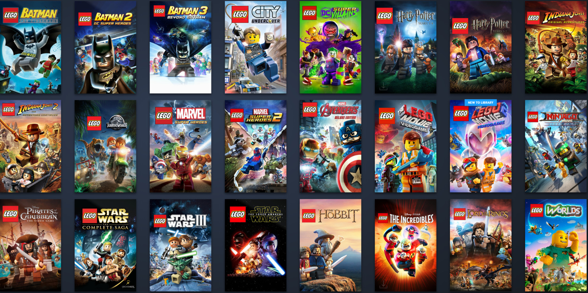
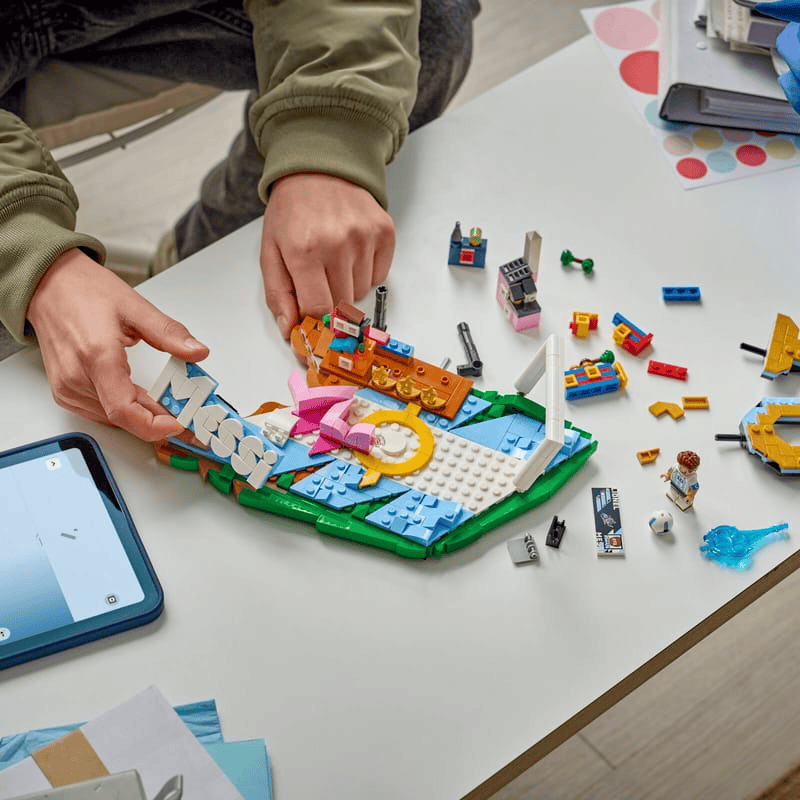
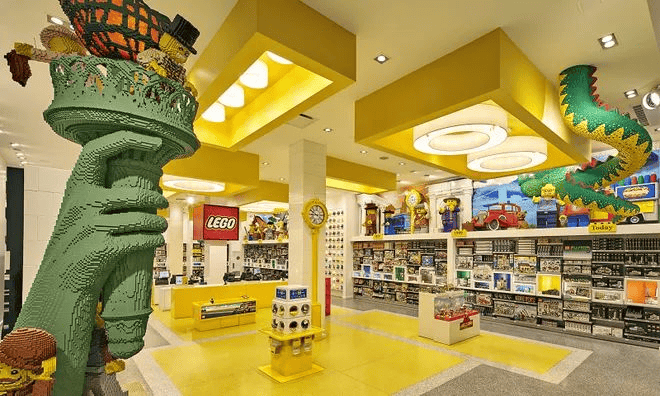
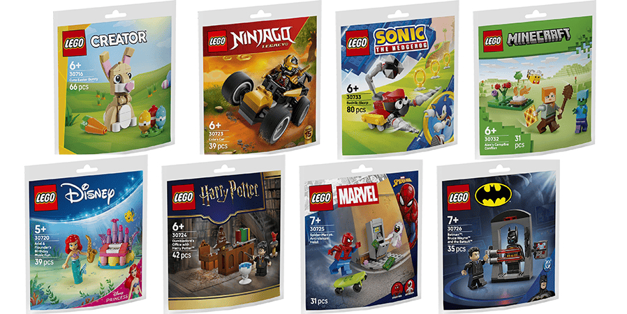
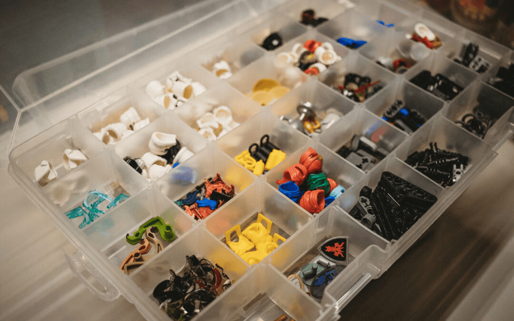

Home
Recently I've been reconnecting my passion for LEGO and building. For me it's a great way to unwind and express my imagination.
There are an abundance of mediums available to experience LEGO. Whether its through building (physically/digitally), gaming or storytelling there is no shortage.

LEGO isn't just about playing with plastic. It's also for storytelling and building worlds. (Source: Search engine images "lego humble bundle")
Sets/Bricks
The most common usage and way to use LEGO to create/play. Getting a specific set with a build, characters and instructions to make and play with it.
Video Games
Games that are comprised of a rich story mode, allowing players to enjoy a curated creative world, characters and collectables.
Design/Media
One of the most creative ways to experience LEGO, including custom designs (fan designed creations) and media content (3d modeling, animation, etc.).
About Me
LEGO was a significant part of my childhood, and its become more of a poplarized hobby when I entered college.
As of late, I've been focusing more on the creative side of LEGO, designing and modeling custom creations.
Lego is only limited by your imagination. (Source: In-game capture screenshot from LEGO Marvel Superheroes)
| Category | Name | Status |
|---|---|---|
| Most Recent Game | LEGO Marvel Superheroes | Completed |
| Most Recent Set | The Delorean #10300 | Completed |
| Next Game | LEGO Batman: The Videogame 2008 | Not Started |
| Next Planned Set | The Classic TV Series Batmobile #76328 | Not Purchased |
Time To Build
The best part about LEGO is how easily it fits into your life. You can spend a quick few minutes assembling a small vehicle or lose yourself in a massive building marathon. There's no "set season" for it either, the bricks are ready whenever inspiration strikes.
Even so, any fan knows there are certain moments that are just perfect for breaking out a new set, and the LEGO community definitely has its own seasonal rhythm.

Late Nights Sessions
Once all the daily responsibilities are completely out of the way, cracking open a set with a good podcast playing in the background is the perfect midnight wind-down.
Weekends Marathons
Nothing beats a completely free Saturday. You can clear off the entire dining room table, dump all the numbered bags, and build a massive flagship model without ever checking the time.
Post-Exam Breaks (Pure Reward)
When your brain is fried from studying or coding, taking 20 minutes to finish just one or two instruction stages gives you a quick, satisfying win to reset your focus.
Lego Waves
- Winter Wave (January 1st): This is typically the biggest, most chaotic release day of the year. LEGO routinely drops over 100 to 150 new sets all at once on New Year's Day.
- Mini Spring Wave (March 1st): A secondary drop that has grown significantly in recent years. Instead of waiting for summer, LEGO uses March to launch specific licensed or specialized waves.
- The Summer Wave (June 1st Rest of World/August 1st North America): This wave is a bit unique because its timing depends heavily on where you live. LEGO splits the summer wave to manage factory inventory and regional school vacation timelines.
- Small Fall Drop (October 1st): This is a smaller, targeted wave designed specifically to line up your wallet for the holiday season.
Places to Explore
You can get your LEGO fix just about anywhere these days—browsing designs on your phone, sorting pieces at your desk, or visiting a massive convention. But some spots are absolute paradises for fans looking to connect with the community.

Official LEGO Stores
The absolute mother ship. Going to an official store lets you hit the Pick-a-Brick wall, build custom minifigures, and see massive, intricate display models built by master designers up close.
Independent Brick Shops
Local, non-franchise brick stores are hidden gems. They are the best spots for hunting down retired vintage sets, buying bulk pieces by the pound, and chatting with fellow adult fans (AFOLs).
Conventions & LUGs
Joining a local LEGO User Group (LUG) or hitting a regional convention completely changes the hobby. Seeing giant collaborative city layouts and custom masterpieces in person is so inspiring.
| Location | Best For |
|---|---|
| Official Retail Stores | New releases, custom minifigs, and the Pick-a-Brick wall |
| Local Buy/Sell/Trade Shops | Finding rare minifigures, bulk bricks, and retired sets |
| Home Build Station | Sorting, deep-focus custom designing, and long building sessions |
How to Get Building
Getting into LEGO is incredibly easy, and you don't need a massive budget or a dedicated room to start creating. Whether you want to follow step-by-step instructions or just mess around with a big tub of random bricks, here is the best way to jump in.

- Choose your building style. Some fans love the zen focus of following official instruction booklets exactly, while others prefer "free-building" completely custom creations (MOCs) from scratch.
- Start small with themed sets. Don't jump straight into a 6,000-piece flagship model. Grab a small, budget-friendly set from a theme you already love—like Creator 3-in-1, Star Wars, Speed Champions, or Botanical.
- Grab a classic brick box. If you want pure creative freedom, pick up a LEGO Classic medium or large brick box. It gives you a huge variety of colors, shapes, windows, and wheels to build whatever comes to mind.
- Get inspired by the community. Check out build logs on YouTube, browse designs on Rebrickable to find alternative builds for sets you already own, and see how other builders solve tricky design problems.
Casual Building
Grab small starter sets or polybags under $20. They are quick, super satisfying to build, and look awesome on a desk or shelf without taking over your space.
Advanced Designing
Dive into complex modular buildings, intricate Technic machinery, or digital prototyping using free software like BrickLink Studio on your computer.
Why I Love LEGO
For me, LEGO isn't just something to mess around with when I'm bored. It's a genuine passion and something I constantly look forward to. There's just nothing quite like the feeling of opening a new box and diving into a build.
It's my absolute favorite way to unwind after a crazy day of classes and work. When my brain is completely fried, sitting down with a massive pile of bricks completely resets my mind in a way that nothing else can.

Pure Creation & Design
I absolutely love the design side of it. Unplugging from screens and building something real with your own hands is so rewarding. It's amazing to watch an idea in your head turn into a physical model brick by brick.
Incredible World Building
The sheer scale of what you can create is wild! It stretches your spatial reasoning, unlocks your imagination, and lets you figure out how tiny, intricate connections work together to form a massive structural masterpiece.
The Ultimate Decompress
It's the perfect stress reliever. Clicking pieces together gives you this awesome, instant feeling of accomplishment. It's just a fun, creative, and therapeutic escape from real-world chaos.
Honestly, the engineering that goes into these sets blows my mind every single time. Seeing how designers use everyday bricks in clever, unexpected ways to create crazy details is just so inspiring. I'm a massive fan, and that's exactly why LEGO is my ultimate hobby!
AI Prompts
I did not utilize generative AI tools to create any images for this project platform.
All graphical assets, photos, and screenshot media utilized across these sections were sourced ethically from public web search engines, community database catalogs, or directly from official LEGO Group product listings.
- Image Sourcing: Sourced entirely from public search directories and official product pages.
- Code Generation: All structural HTML layout, CSS design rules, and active script interactions were manually coded.
- Content Writing: All descriptive copy, tables, and creative hobby summaries were written completely by hand.